← 返回论文精读
逐项来源与核验记录
这是 Reader v3 的次级来源检查面。正文叙事与审计记录分离；这里仅展示来源定位、视觉核验状态与正文引用位置。
figure · p.3 · inspected
Fig. 1

Fig. 1 Model overview and global model evaluation on held-out GEDI
在主 Reader 中的引用位置
figure · p.5 · inspected
Fig. 2
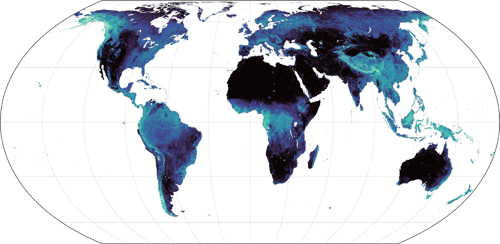
Fig. 2 Global canopy height map for the year 2020. The underlying data
在主 Reader 中的引用位置
figure · p.6 · inspected
Fig. 3
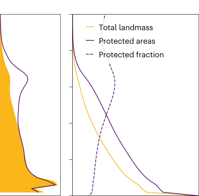
Fig. 3 Global canopy height distributions of the entire landmass, protected
在主 Reader 中的引用位置
figure · p.7 · inspected
Fig. 4
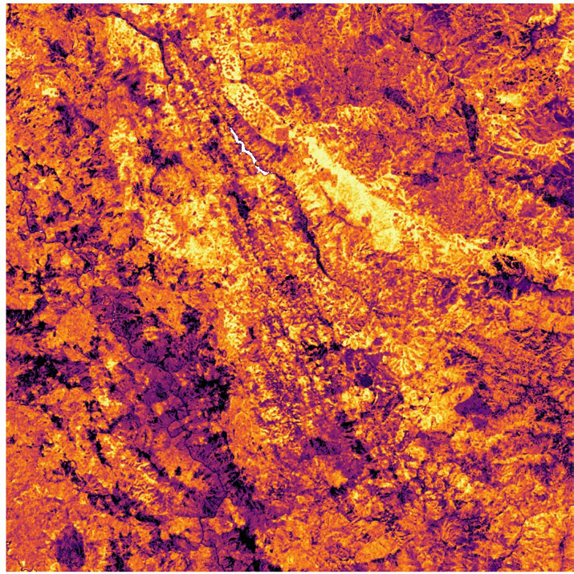
Fig. 4 Examples for potential applications. a, Biomass and carbon stock
在主 Reader 中的引用位置
figure · p.13 · inspected
Extended Data Fig. 1
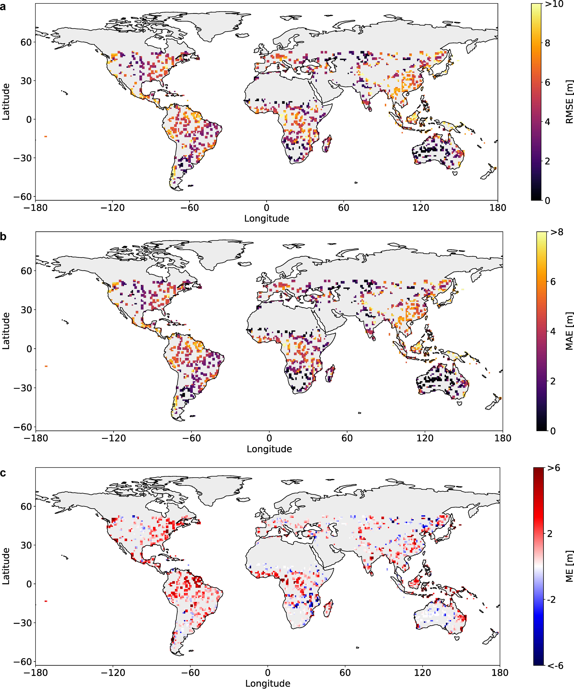
Extended Data Fig. 1 Geographical error analysis on held-out GEDI validation data at 1 degree resolution ( ≈ 111 km on the equator). a) Root mean square
在主 Reader 中的引用位置
figure · p.14 · inspected
Extended Data Fig. 2
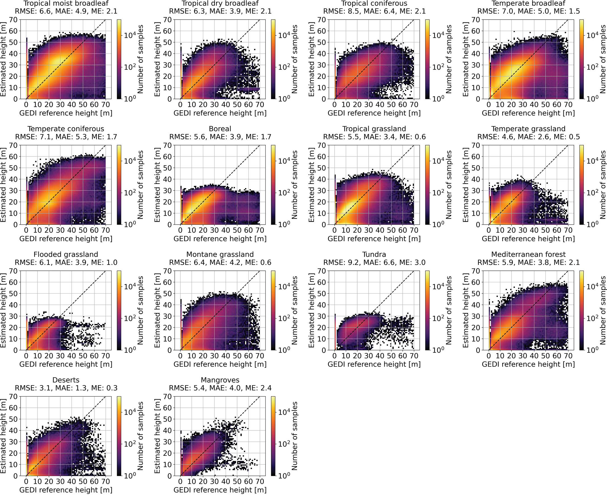
Extended Data Fig. 2 Biome-level evaluation with GEDI reference data. Biome-level confusion plots showing the relationship between GEDI reference data and the
在主 Reader 中的引用位置
figure · p.15 · inspected
Extended Data Fig. 3
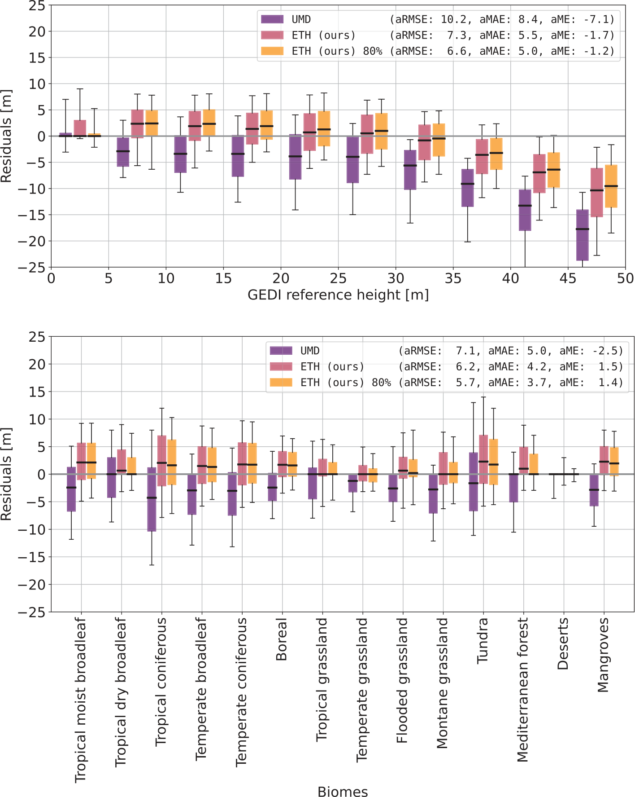
Extended Data Fig. 3 See next page for caption.
在主 Reader 中的引用位置
figure · p.16 · NEEDS_REVIEW
Extended Data Fig. 3
Extended Data Fig. 3 Comparison of canopy top height estimates from ETH
在主 Reader 中的引用位置
figure · p.17 · inspected
Extended Data Fig. 4
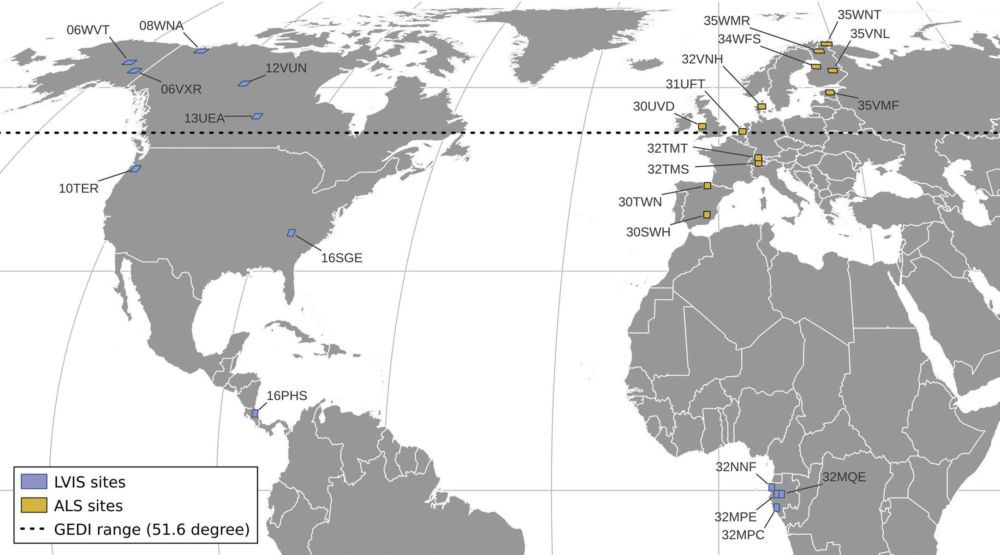
Extended Data Fig. 4 Locations of independent airborne LIDAR campaigns. Independent airborne LIDAR data from 24 regions including 12 regions with LVIS
在主 Reader 中的引用位置
figure · p.18 · inspected
Extended Data Fig. 5
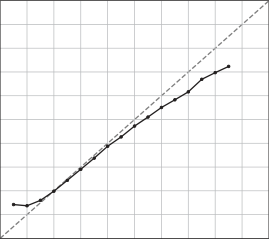
Extended Data Fig. 5 See next page for caption.
在主 Reader 中的引用位置
figure · p.19 · NEEDS_REVIEW
Extended Data Fig. 5
Extended Data Fig. 5 Evaluation of the estimated uncertainty. a) Calibration
在主 Reader 中的引用位置
figure · p.20 · inspected
Extended Data Fig. 6
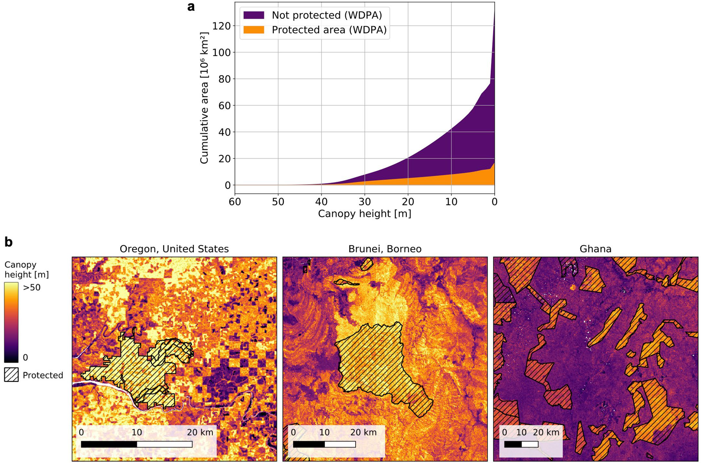
Extended Data Fig. 6 Protected area analysis according to the World
在主 Reader 中的引用位置
figure · p.21 · inspected
Extended Data Fig. 7
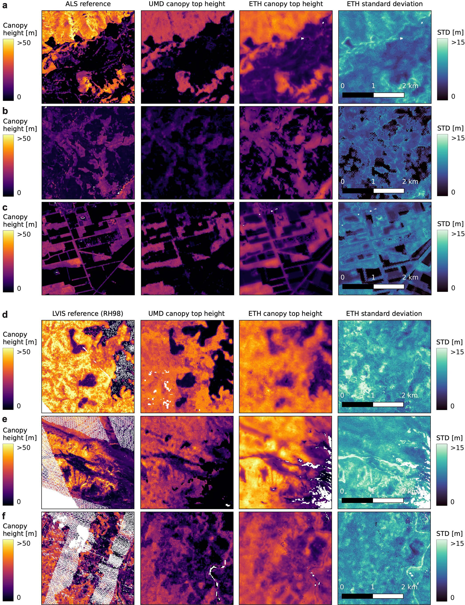
Extended Data Fig. 7 See next page for caption.
在主 Reader 中的引用位置
figure · p.22 · NEEDS_REVIEW
Extended Data Fig. 7
Extended Data Fig. 7 Qualitative examples comparing UMD and ETH (ours)
在主 Reader 中的引用位置
figure · p.23 · inspected
Extended Data Fig. 8
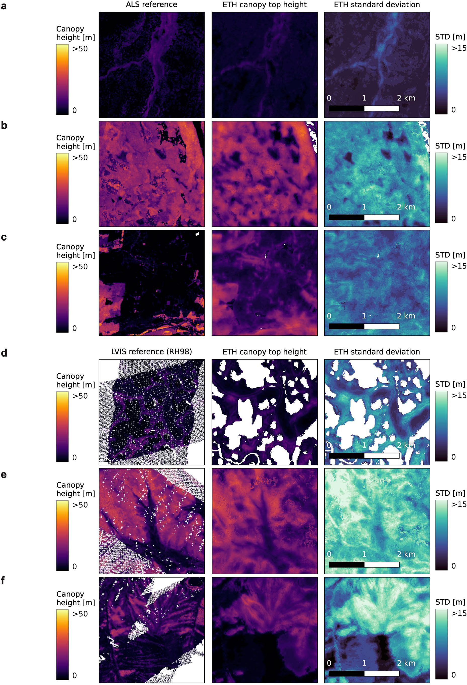
Extended Data Fig. 8 See next page for caption.
在主 Reader 中的引用位置
figure · p.24 · NEEDS_REVIEW
Extended Data Fig. 8
Extended Data Fig. 8 Qualitative examples beyond GEDI coverage (that is
在主 Reader 中的引用位置
table · p.25 · NEEDS_REVIEW
Extended Data Table 1
Extended Data Table 1 Tile-level evaluation with independent airborne LIDAR data
在主 Reader 中的引用位置
table · p.26 · NEEDS_REVIEW
Extended Data Table 2
Extended Data Table 2 Averaged evaluation with independent airborne LIDAR data
在主 Reader 中的引用位置
page · p.1 · SOURCE_PAGE
p.1
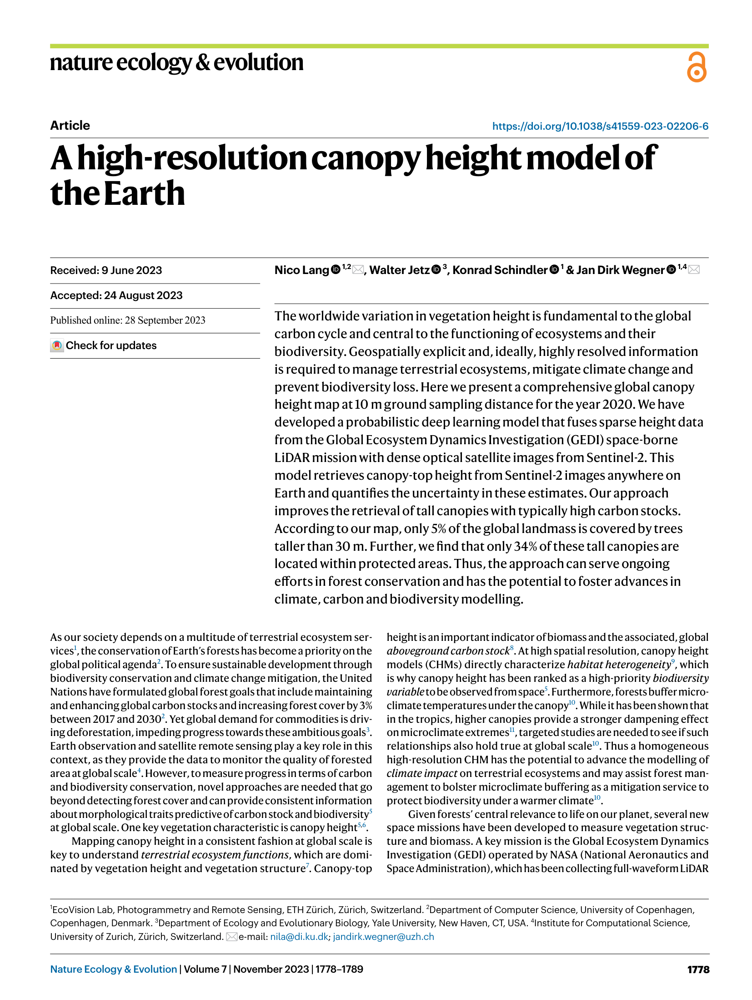
在主 Reader 中的引用位置
page · p.2 · SOURCE_PAGE
p.2
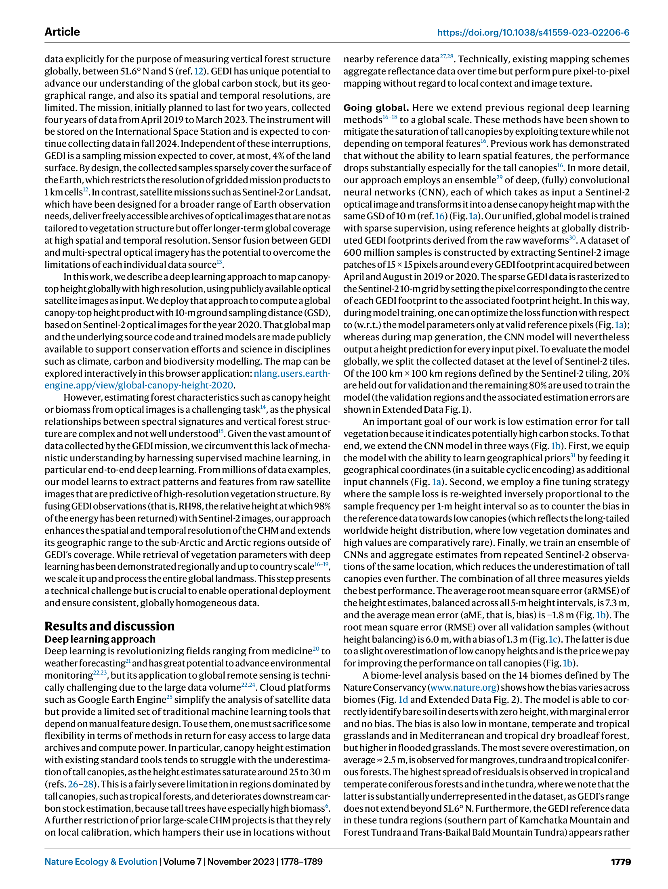
在主 Reader 中的引用位置
page · p.3 · SOURCE_PAGE
p.3
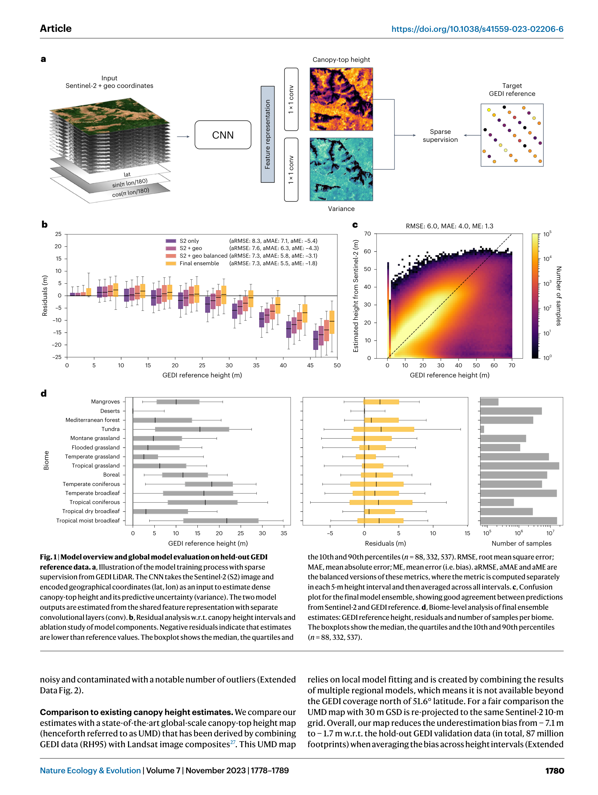
在主 Reader 中的引用位置
equation · p.3 · UNCERTAIN
EQ-01
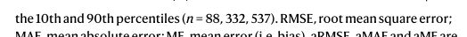
the 10th and 90th percentiles (n = 88, 332, 537). RMSE, root mean square error;
在主 Reader 中的引用位置
equation · p.3 · UNCERTAIN
EQ-02
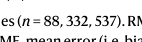
(n = 88, 332, 537).
在主 Reader 中的引用位置
page · p.4 · SOURCE_PAGE
p.4
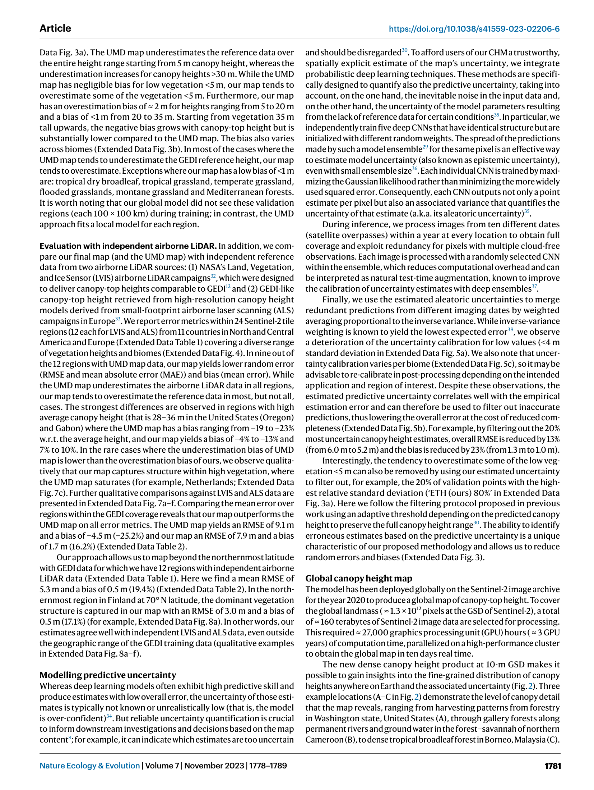
在主 Reader 中的引用位置
equation · p.4 · UNCERTAIN
EQ-03
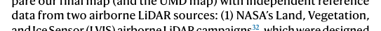
data from two airborne LiDAR sources: (1) NASA’s Land, Vegetation,
在主 Reader 中的引用位置
equation · p.4 · UNCERTAIN
EQ-04
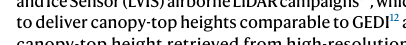
to deliver canopy-top heights comparable to GEDI12 and (2) GEDI-like
在主 Reader 中的引用位置
page · p.5 · SOURCE_PAGE
p.5
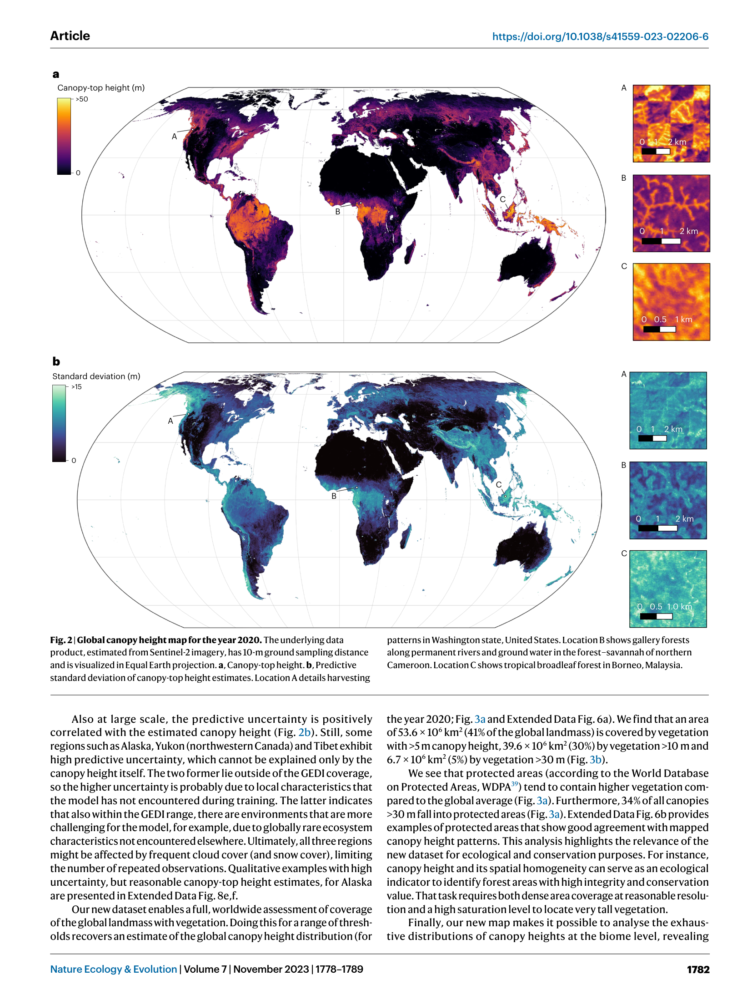
在主 Reader 中的引用位置
page · p.6 · SOURCE_PAGE
p.6
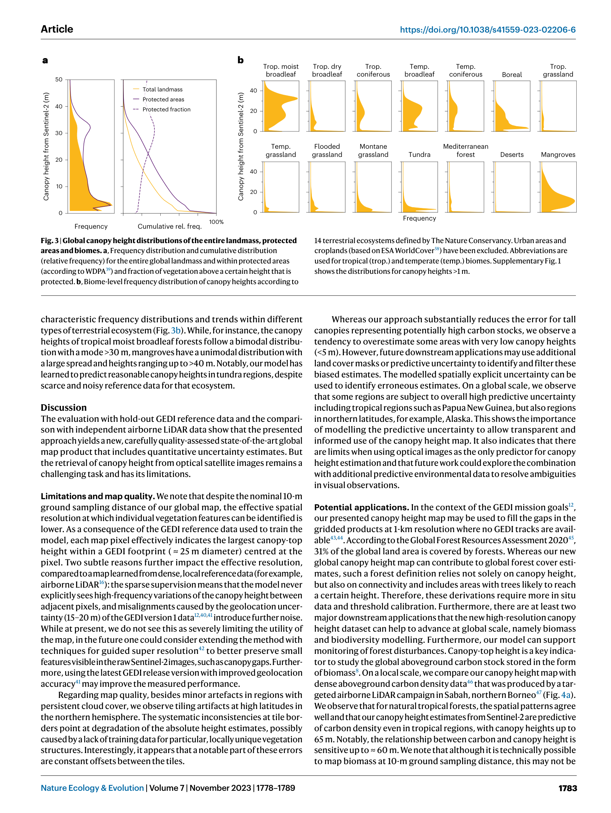
在主 Reader 中的引用位置
page · p.7 · SOURCE_PAGE
p.7
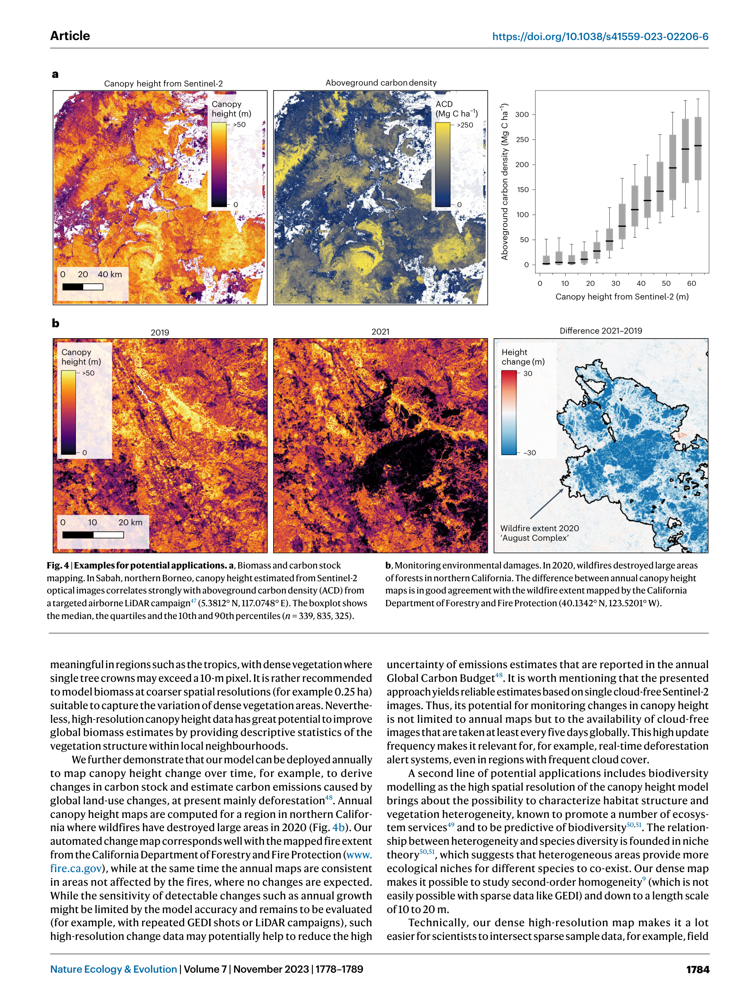
在主 Reader 中的引用位置
equation · p.7 · UNCERTAIN
EQ-05
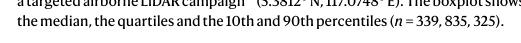
the median, the quartiles and the 10th and 90th percentiles (n = 339, 835, 325).
在主 Reader 中的引用位置
page · p.8 · SOURCE_PAGE
p.8
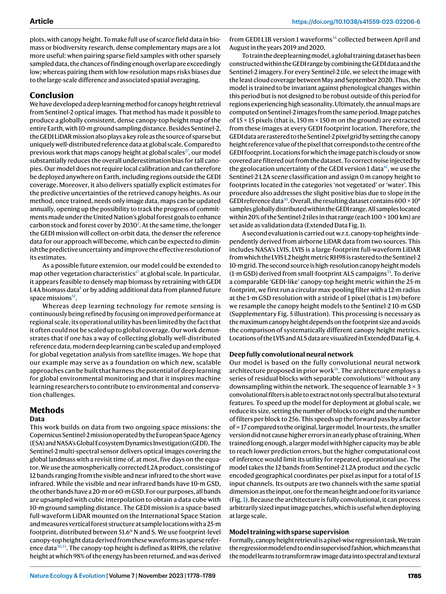
在主 Reader 中的引用位置
page · p.9 · SOURCE_PAGE
p.9
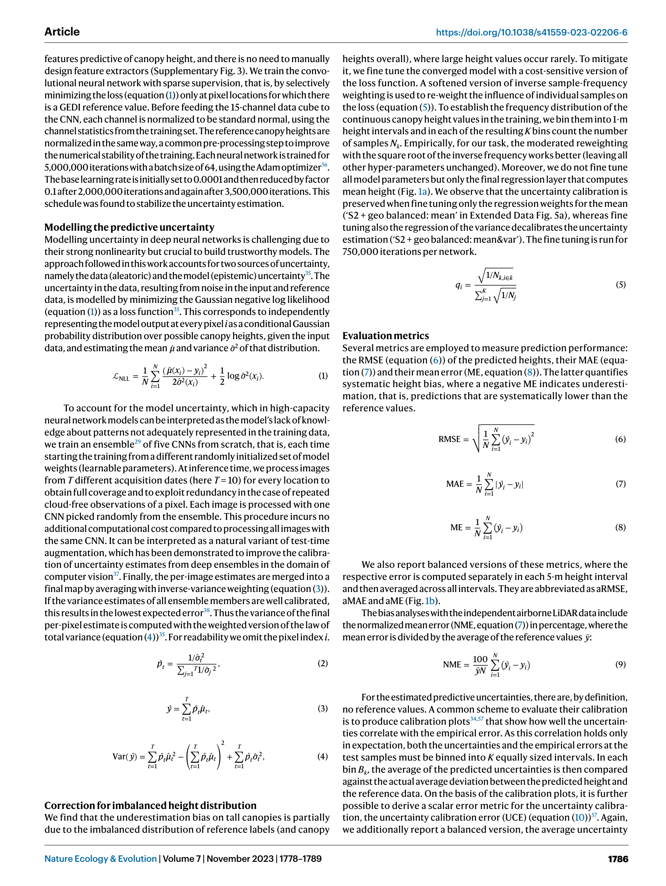
在主 Reader 中的引用位置
equation · p.9 · UNCERTAIN
EQ-06
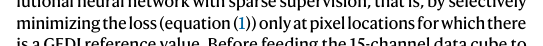
minimizing the loss (equation (1)) only at pixel locations for which there
在主 Reader 中的引用位置
equation · p.9 · UNCERTAIN
EQ-07
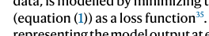
(equation (1)) as a loss function35. This corresponds to independently
在主 Reader 中的引用位置
equation · p.9 · UNCERTAIN
EQ-08
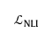
ℒNLL = 1
在主 Reader 中的引用位置
equation · p.9 · UNCERTAIN
EQ-09
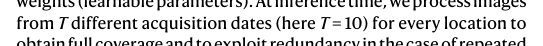
from T different acquisition dates (here T = 10) for every location to
在主 Reader 中的引用位置
equation · p.9 · UNCERTAIN
EQ-10
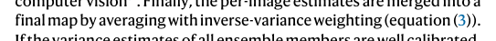
final map by averaging with inverse-variance weighting (equation (3)).
在主 Reader 中的引用位置
equation · p.9 · UNCERTAIN
EQ-11
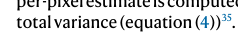
total variance (equation (4))35. For readability we omit the pixel index i.
在主 Reader 中的引用位置
equation · p.9 · UNCERTAIN
EQ-12
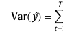
Var( ̂y) =
在主 Reader 中的引用位置
equation · p.9 · UNCERTAIN
EQ-13
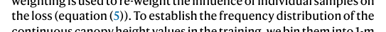
the loss (equation (5)). To establish the frequency distribution of the
在主 Reader 中的引用位置
equation · p.9 · UNCERTAIN
EQ-14
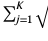
j=1 √1/Nj
在主 Reader 中的引用位置
equation · p.9 · UNCERTAIN
EQ-15
the RMSE (equation (6)) of the predicted heights, their MAE (equa-
在主 Reader 中的引用位置
equation · p.9 · UNCERTAIN
EQ-16
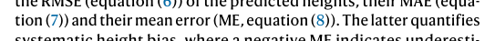
tion (7)) and their mean error (ME, equation (8)). The latter quantifies
在主 Reader 中的引用位置
equation · p.9 · UNCERTAIN
EQ-17
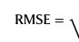
RMSE =
在主 Reader 中的引用位置
equation · p.9 · UNCERTAIN
EQ-18
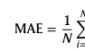
MAE = 1
在主 Reader 中的引用位置
equation · p.9 · UNCERTAIN
EQ-19
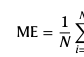
ME = 1
在主 Reader 中的引用位置
equation · p.9 · UNCERTAIN
EQ-20
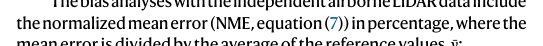
the normalized mean error (NME, equation (7)) in percentage, where the
在主 Reader 中的引用位置
equation · p.9 · UNCERTAIN
EQ-21
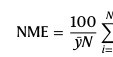
NME = 100
在主 Reader 中的引用位置
equation · p.9 · UNCERTAIN
EQ-22
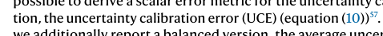
tion, the uncertainty calibration error (UCE) (equation (10))57. Again,
在主 Reader 中的引用位置
page · p.10 · SOURCE_PAGE
p.10
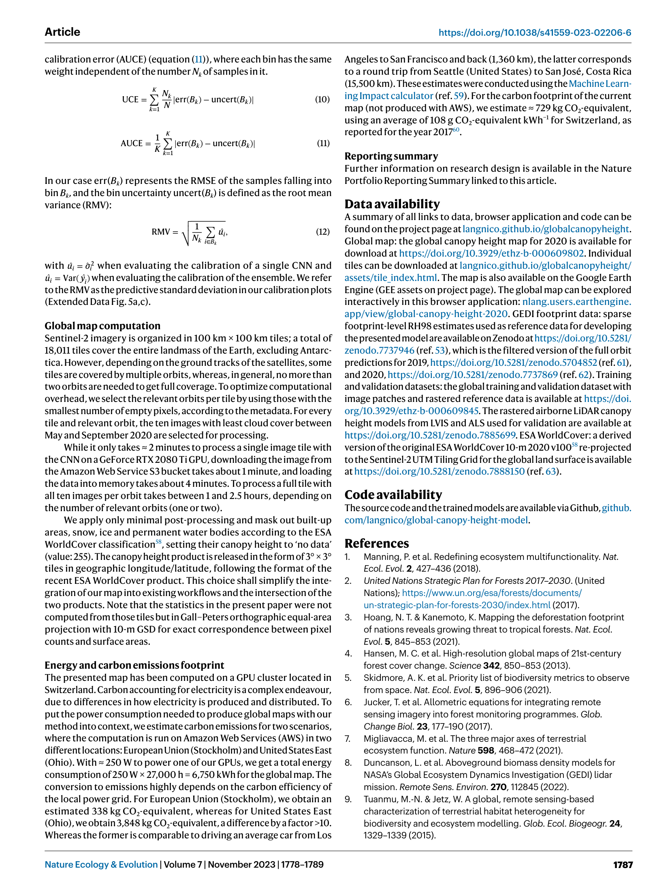
在主 Reader 中的引用位置
equation · p.10 · UNCERTAIN
EQ-23
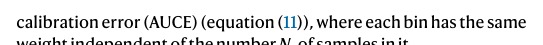
calibration error (AUCE) (equation (11)), where each bin has the same
在主 Reader 中的引用位置
equation · p.10 · UNCERTAIN
EQ-24
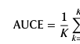
AUCE = 1
在主 Reader 中的引用位置
equation · p.10 · UNCERTAIN
EQ-25
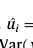
̂ui = ̂σi
在主 Reader 中的引用位置
equation · p.10 · UNCERTAIN
EQ-26
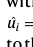
̂ui = Var( ̂yi) when evaluating the calibration of the ensemble. We refer
在主 Reader 中的引用位置
equation · p.10 · UNCERTAIN
EQ-27
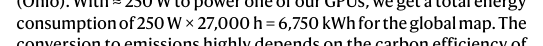
consumption of 250 W × 27,000 h = 6,750 kWh for the global map. The
在主 Reader 中的引用位置
equation · p.10 · UNCERTAIN
EQ-28
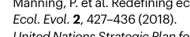
Ecol. Evol. 2, 427–436 (2018).
在主 Reader 中的引用位置
equation · p.10 · UNCERTAIN
EQ-29
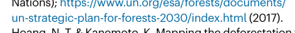
un-strategic-plan-for-forests-2030/index.html (2017).
在主 Reader 中的引用位置
equation · p.10 · UNCERTAIN
EQ-30
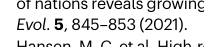
Evol. 5, 845–853 (2021).
在主 Reader 中的引用位置
equation · p.10 · UNCERTAIN
EQ-31
forest cover change. Science 342, 850–853 (2013).
在主 Reader 中的引用位置
equation · p.10 · UNCERTAIN
EQ-32
from space. Nat. Ecol. Evol. 5, 896–906 (2021).
在主 Reader 中的引用位置
equation · p.10 · UNCERTAIN
EQ-33
Change Biol. 23, 177–190 (2017).
在主 Reader 中的引用位置
equation · p.10 · UNCERTAIN
EQ-34
ecosystem function. Nature 598, 468–472 (2021).
在主 Reader 中的引用位置
equation · p.10 · UNCERTAIN
EQ-35
mission. Remote Sens. Environ. 270, 112845 (2022).
在主 Reader 中的引用位置
equation · p.10 · UNCERTAIN
EQ-36
1329–1339 (2015).
在主 Reader 中的引用位置
page · p.11 · SOURCE_PAGE
p.11
在主 Reader 中的引用位置
equation · p.11 · UNCERTAIN
EQ-37
canopies. Nat. Ecol. Evol. 3, 744–749 (2019).
在主 Reader 中的引用位置
equation · p.11 · UNCERTAIN
EQ-38
Change Biol. 24, 5243–5258 (2018).
在主 Reader 中的引用位置
equation · p.11 · UNCERTAIN
EQ-39
topography. Sci. Remote Sens. 1, 100002 (2020).
在主 Reader 中的引用位置
equation · p.11 · UNCERTAIN
EQ-40
(2020).
在主 Reader 中的引用位置
equation · p.11 · UNCERTAIN
EQ-41
Environ. Res. Lett. 2, 045023 (2007).
在主 Reader 中的引用位置
equation · p.11 · UNCERTAIN
EQ-42
Rep. 3, 1–18 (2017).
在主 Reader 中的引用位置
equation · p.11 · UNCERTAIN
EQ-43
Remote Sens. Environ. 233, 111347 (2019).
在主 Reader 中的引用位置
equation · p.11 · UNCERTAIN
EQ-44
at https://doi.org/10.48550/arXiv.2111.13154 (2021).
在主 Reader 中的引用位置
equation · p.11 · UNCERTAIN
EQ-45

(2021).
在主 Reader 中的引用位置
equation · p.11 · UNCERTAIN
EQ-46
approach. Remote Sens. Environ. 261, 112479 (2021).
在主 Reader 中的引用位置
equation · p.11 · UNCERTAIN
EQ-47
alphafold. Nature 596, 583–589 (2021).
在主 Reader 中的引用位置
equation · p.11 · UNCERTAIN
EQ-48
generative models of radar. Nature 597, 672–677 (2021).
在主 Reader 中的引用位置
equation · p.11 · UNCERTAIN
EQ-49
data-driven earth system science. Nature 566, 195–204 (2019).
在主 Reader 中的引用位置
equation · p.11 · UNCERTAIN
EQ-50
conservation. Nat. Commun. 13, 792 (2022).
在主 Reader 中的引用位置
equation · p.11 · UNCERTAIN
EQ-51
sensing. ISPRS J. Photogramm. Remote Sens. 173, 24–49 (2021).
在主 Reader 中的引用位置
equation · p.11 · UNCERTAIN
EQ-52
analysis for everyone. Remote Sens. Environ. 202, 18–27 (2017).
在主 Reader 中的引用位置
equation · p.11 · UNCERTAIN
EQ-53
Environ. 185, 221–232 (2016).
在主 Reader 中的引用位置
equation · p.11 · UNCERTAIN
EQ-54
112165 (2021).
在主 Reader 中的引用位置
equation · p.11 · UNCERTAIN
EQ-55
Sens. 12, 2840 (2020).
在主 Reader 中的引用位置
equation · p.11 · UNCERTAIN
EQ-56
Remote Sens. Environ. 268, 112760 (2022).
在主 Reader 中的引用位置
equation · p.11 · UNCERTAIN
EQ-57
gov (2018).
在主 Reader 中的引用位置
equation · p.11 · UNCERTAIN
EQ-58
(2023).
在主 Reader 中的引用位置
equation · p.11 · UNCERTAIN
EQ-59
https://openreview.net/forum?id=BJxI5gHKDr, https://dblp.org/
在主 Reader 中的引用位置
equation · p.11 · UNCERTAIN
EQ-60
(2021).
在主 Reader 中的引用位置
equation · p.11 · UNCERTAIN
EQ-61
of gedi. Remote Sens. Environ. 291, 113571 (2023).
在主 Reader 中的引用位置
equation · p.11 · UNCERTAIN
EQ-62
from space. Environ. Res. Lett. 17, 095001 (2022).
在主 Reader 中的引用位置
equation · p.11 · UNCERTAIN
EQ-63
Zenodo https://doi.org/10.5281/zenodo.4549461 (2021).
在主 Reader 中的引用位置
equation · p.11 · UNCERTAIN
EQ-64
Conserv. 217, 289–310 (2018).
在主 Reader 中的引用位置
equation · p.11 · UNCERTAIN
EQ-65
Data Discuss. 14, 1917–2005 (2022).
在主 Reader 中的引用位置
equation · p.11 · UNCERTAIN
EQ-66
4839 (2018).
在主 Reader 中的引用位置
equation · p.11 · UNCERTAIN
EQ-67
Ecology 42, 594–598 (1961).
在主 Reader 中的引用位置
equation · p.11 · UNCERTAIN
EQ-68
J. Biogeogr. 31, 79–92 (2004).
在主 Reader 中的引用位置
page · p.12 · SOURCE_PAGE
p.12
在主 Reader 中的引用位置
equation · p.12 · UNCERTAIN
EQ-69
10.5281/zenodo.7737946 (2023).
在主 Reader 中的引用位置
equation · p.12 · UNCERTAIN
EQ-70
https://doi.org/10.5281/zenodo.5571936 (2021).
在主 Reader 中的引用位置
equation · p.12 · UNCERTAIN
EQ-71
https://doi.org/10.48550/arXiv.1910.09700 (2019).
在主 Reader 中的引用位置
equation · p.12 · UNCERTAIN
EQ-72
Energy Policy 162, 112794 (2022).
在主 Reader 中的引用位置
equation · p.12 · UNCERTAIN
EQ-73
zenodo.5704852 (2021).
在主 Reader 中的引用位置
equation · p.12 · UNCERTAIN
EQ-74
zenodo.7737869 (2023).
在主 Reader 中的引用位置
equation · p.12 · UNCERTAIN
EQ-75
https://doi.org/10.5281/zenodo.7888150 (2023).
在主 Reader 中的引用位置
page · p.13 · SOURCE_PAGE
p.13
在主 Reader 中的引用位置
page · p.14 · SOURCE_PAGE
p.14
在主 Reader 中的引用位置
page · p.15 · SOURCE_PAGE
p.15
在主 Reader 中的引用位置
page · p.16 · SOURCE_PAGE
p.16
在主 Reader 中的引用位置
equation · p.16 · UNCERTAIN
EQ-76
and the 10th and 90th percentiles (n=87,406,779 “UMD" and “ETH (ours)";
在主 Reader 中的引用位置
equation · p.16 · UNCERTAIN
EQ-77
n=69,925,423 “ETH (ours) 80%"). b) Residual analysis w.r.t. biomes defined by The
在主 Reader 中的引用位置
equation · p.16 · UNCERTAIN
EQ-78
the quartiles, and the 10th and 90th percentiles (n=87,406,779 “UMD" and
在主 Reader 中的引用位置
equation · p.16 · UNCERTAIN
EQ-79
“ETH (ours)"; n=69,925,423 “ETH (ours) 80%").
在主 Reader 中的引用位置
page · p.17 · SOURCE_PAGE
p.17
在主 Reader 中的引用位置
page · p.18 · SOURCE_PAGE
p.18
在主 Reader 中的引用位置
page · p.19 · SOURCE_PAGE
p.19
在主 Reader 中的引用位置
page · p.20 · SOURCE_PAGE
p.20
在主 Reader 中的引用位置
page · p.21 · SOURCE_PAGE
p.21
在主 Reader 中的引用位置
page · p.22 · SOURCE_PAGE
p.22
在主 Reader 中的引用位置
page · p.23 · SOURCE_PAGE
p.23
在主 Reader 中的引用位置
page · p.24 · SOURCE_PAGE
p.24
在主 Reader 中的引用位置
page · p.25 · SOURCE_PAGE
p.25
在主 Reader 中的引用位置
page · p.26 · SOURCE_PAGE
p.26
在主 Reader 中的引用位置
page · p.27 · SOURCE_PAGE
p.27
在主 Reader 中的引用位置
page · p.28 · SOURCE_PAGE
p.28
在主 Reader 中的引用位置